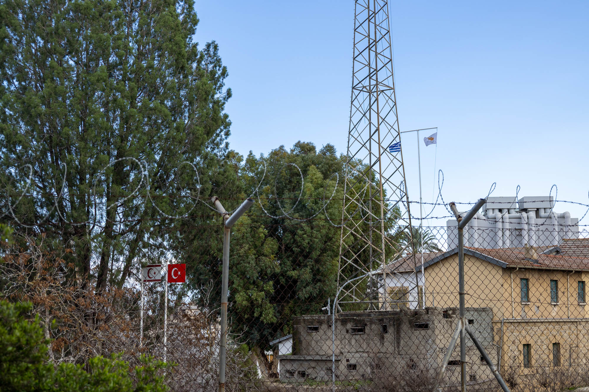
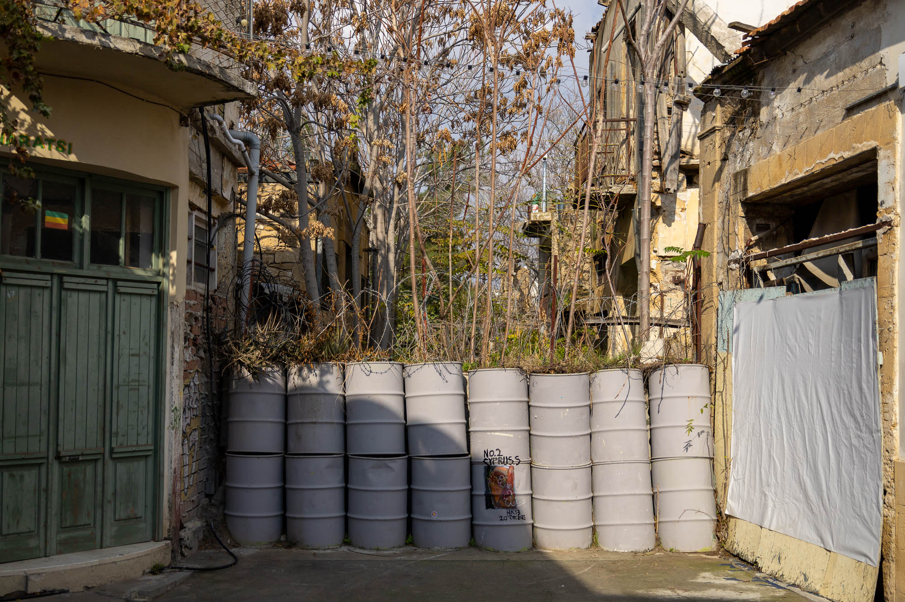
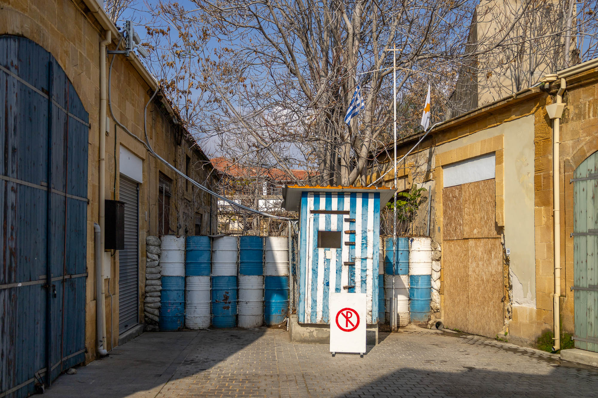
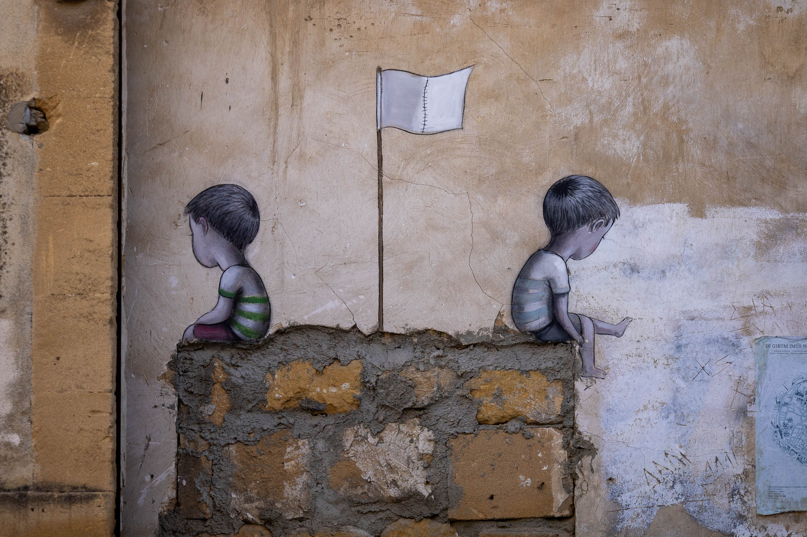
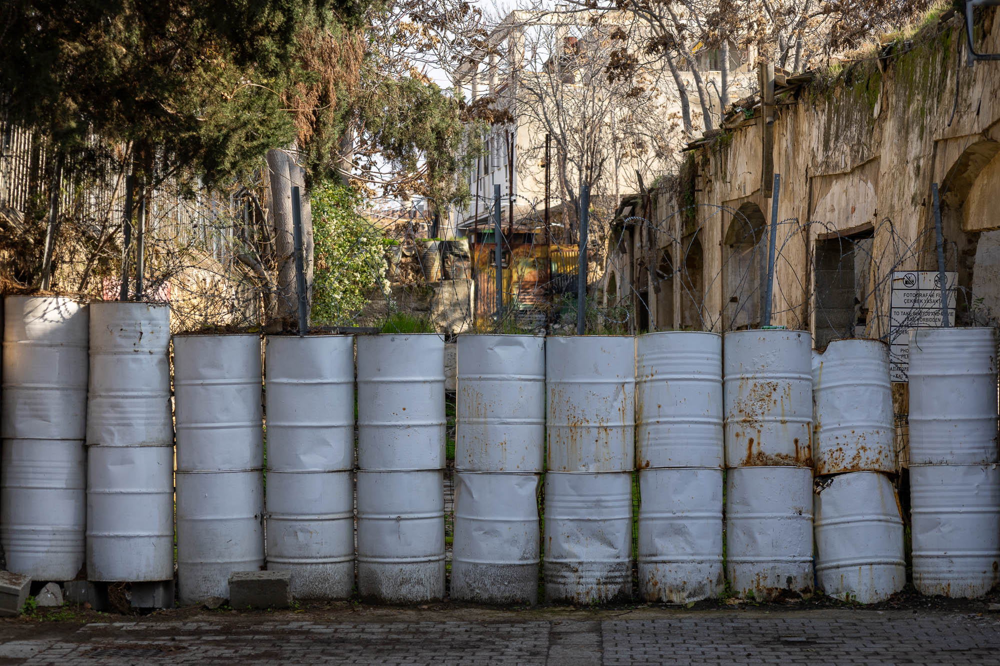
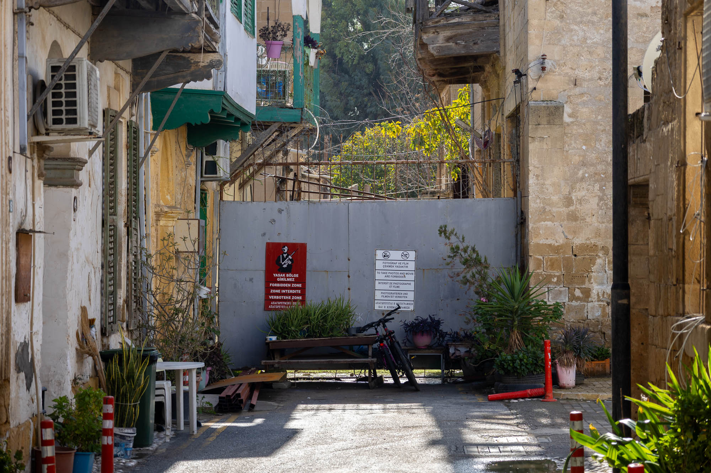
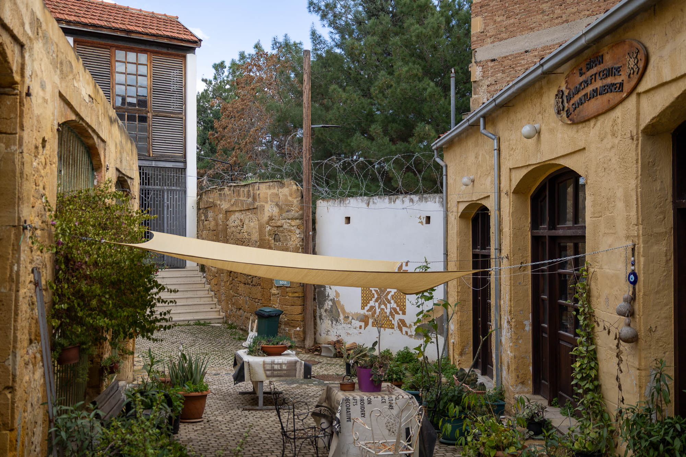
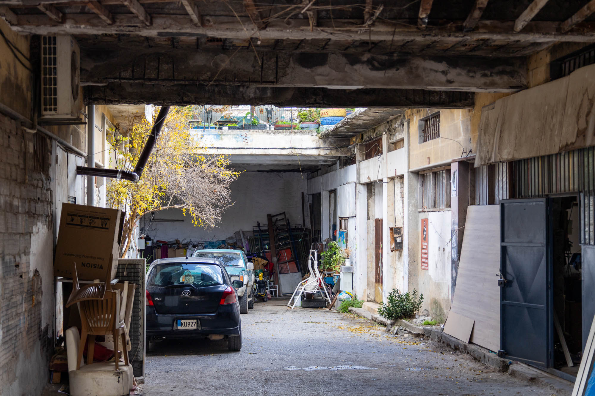

The story of a divided island.

From Ottoman to British rule
From the mid 1500s until 1878, Cyprus was part of the Ottoman Empire. At the height of its power, the Empire controlled the Mediterranean coast from modern-day Algeria all the way around to Croatia, as well as the majority of the Red and Black Sea coastlines. Spanning from Hungary in the north to beyond Mecca in the south, the Ottoman's influence dominated southeastern Europe and parts of the Middle East.
Like all large empries, eventually the Ottoman Empire’s influence began to wane, earning it the nickname "the sick man of Europe". Following its defeat in the Russo-Turkish War (1877–1878) and wishing to cling to as much power as possible, the Empire entered into a protection deal with Britain to deter further Russian expansion into Ottoman territory.
In exchange for this protection, the Ottomans leased Cyprus to the British, granting them administrative control of the island and the right to establish military bases. This arrangement endured for over thirty years until the outbreak of the First World War, when the Ottoman Empire aligned with Germany.
Now enemies, the British terminated the lease of Cyprus and took full control, starting the next chapter in the island's history.
The path to independence
Following World War I, the newly formed Republic of Turkey formally recognised British sovereignty over Cyprus, which subsequently became a British Crown Colony. While not immediately apparent, this transition marked the beginning of a long and complex journey toward Cypriot independence.
During official British rule, two opposing nationalist movements emerged: Enosis, seeking unification with Greece, and Taksim, which advocated for a island partition along religious lines. This created a three-way standoff between the two local factions and a British administration intent on maintaining the status quo.
Mounting tensions and armed insurgencies continued to rise until 1960, when a new compromise was reached: Cyprus would become an independent republic.
The new constitution implemented a power-sharing goverment with a Greek Cypriot President and a Turkish Cypriot Vice President, each elected by their respective communities. Britain, Greece, and Turkey were designated “Guarantor Powers” with the right to intervene to maintain peace. As part of the independence, Britain retained two Sovereign Base Areas (SBAs) at Akrotiri and Dhekelia.
Creation of the Green Line
The decade and a half of peace created by the 1960 independence proved fragile due to religious, ideological, ethnic divisions. The term the "Green Line" was coined when a British general used a green pencil to draw a neutral boundary on a map of Nicosia, in hopes of seperating the two nationalist movements and their violent clashes.
In July 1974, a coup backed by the Greek military junta attempted to overthrow the Cypriot government to achieve Enosis. In response, Turkey launched a military intervention, using its “Guarantor Powers” to protect the northern Turkish Cypriot population. On 16 August 1974, a ceasefire was declared, resulting in the Turkish military occupying the northern portion of the island above the new UN Buffer Zone.
From this moment onwards the island and its capital were split in two. The Republic of Cyprus continued to control the south, while the northern 37% of the island became a Turkish-controlled zone. The north later declared itself the Turkish Republic of Northern Cyprus (TRNC). To this date, the only country to formally recognise the TRNC as a legitimate country is Turkey.
The following are my photos and experiences of walking both sides of a divided city after fifty years of seperation.
South Nicosia

In the south of the capital, life abruptly halts well before the Green Line. What were once homes and businesses are now only boarded-up buildings. Often the closest maintained buildings can only be found by turning a corner or a good distance down the street.
These border zones are primarily sparse and functional. From afar, clear lines of sight lead up to barrel barriers, guard booths, barbed wire, and security cameras. All punctuated by the prominent display of Republic of Cyprus flags and Greek flags.
Beyond this immediate border periphery, the atmosphere shifts, returning to the rhythm of a typical European city.

The feeling I got from my time in the south, in relation to the division of the island, is one of loss and injustice. This feeling is still very present in the signage near the border, the local graffiti, and the stories of the people. The reunification situation is currently at a standstill; the south wants it, but only on their terms, as shown by the “No” vote to the 2004 reunification peace plan (the Annan Plan).
However, progress to reconnect has slowly been made since then. Later in 2004, after 29 years of complete separation, the Turkish Cypriot authorities decided to ease travel restrictions and the first border crossing was opened at Ledra Palace, Nicosia. Within the first couple of weeks, it’s estimated that nearly half of the population of the island crossed to the other side to visit. It's said many people from the south were carrying old rusted keys to houses they hadn't seen in decades.


North Nicosia

In the north of the capital, daily life is lived right up against the Green Line. Pot plants, furniture, and bicycles lean against border gates. Cafe courtyards are nestled against walls topped with barbed wire. Household items like boxes and fridges are tucked into corners right beside border warning signs.
Sure, there are still cameras and boarded-up windows, but it doesn't feel the same as the south. People on this side seem to be thinking about, and treating the border, very differently. This ia all punctuated by the prominent display of Turkish Northern Republic of Cyprus flags and Turkish flags.
Beyond this immediate border periphery, the atmosphere is much the same, dense and loud like a Turkish city.

During my time in the north, the prevailing feeling I got regarding the island's division was one of 'waiting'. Turkish Cypriots voted “Yes” to the 2004 reunification peace plan, while Greek Cypriots voted “No”. The south then joined the EU and the north remained isolated. While the north still uses the volatile Turkish Lira, the south uses the much more stable Euro.
The future of this divided landscape remains uncertain, yet a recent election in the north offers promising signs that reunification dialogue is still moving in a constructive direction. For the sake of the island and its communities, one can only hope that the next breakthrough doesn't take another fifty years.
